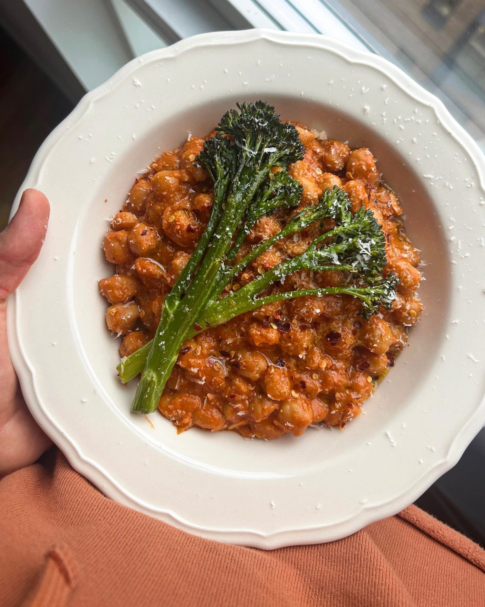

Chickpeas alla Vodka with Charred Tenderstem Broccoli
A vodka and tomato cream sauce built around chickpeas instead of pasta, served with grilled tenderstem broccoli.

Ingredients
To serve
Method
Stops your screen dimming and locking while your hands are busy. It switches off when you leave this page.
- Heat the 2 tbsp olive oil in a frying pan over a medium-low heat.
- Add the 1 banana shallot with a pinch of salt and cook for 7-8 minutes, until soft and translucent.
- Stir in the 3 garlic cloves and pinch of chilli flakes and cook for 30 seconds to 1 minute, until fragrant.
- Increase the heat to medium, stir through the 100g tomato purée and 1 tsp smoked paprika and cook for 2 minutes, until the paste starts to darken and caramelise.
- Pour in the 60ml vodka and stir well, scraping any browned bits from the bottom of the pan.
- Cook for 3 minutes, stirring occasionally, until the alcohol has reduced by about half.
- Stir through the 100ml double cream, mascarpone or crème fraîche to combine.
- Add the 660g jar of chickpeas and their liquid and cook gently for 3-4 minutes, until the chickpeas are warmed through and glossy.
- Meanwhile, heat the grill to medium.
- Toss the 200g tenderstem broccoli with the 1 tbsp olive oil, salt and pepper, then spread it out on a tray in a single layer.
- Grill for 6-8 minutes, turning halfway, until slightly charred, then finish with a small squeeze of lemon juice.
- Squeeze the juice of half the lemon into the chickpeas and add the 40g Parmesan.
- Let everything melt together until silky, then season with salt and a few cracks of black pepper.
- Spoon the chickpeas into bowls and serve with the grilled broccoli, the basil and an extra squeeze of lemon.
Notes
- Crème fraîche gives a tangier, slightly thicker sauce; double cream is silkier.
- The broccoli also works in an air fryer, about 5-6 minutes.
- Good with warm ciabatta or a green salad alongside.
- For the pasta version of the same sauce, see Fusilli a la Vodka with Basil and Parmesan.
Source: https://boldbeanco.com/blogs/beanspo-recipes/chickpeas-alla-vodka-with-charred-tenderstem-broccoli